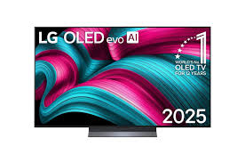

LG C5 OLED هو من أحدث شاشات التلفزيون من إل جي لعام 2025، بيجمع بين جودة صورة ممتازة، أداء قوي في الألعاب، وقدرات ذكية — يعني لو عايز تلفزيون “فخم + عملي + متوازن” للمسلسلات، الأفلام، الألعاب أو الاستخدام اليومي، ده اختيار ممتاز.